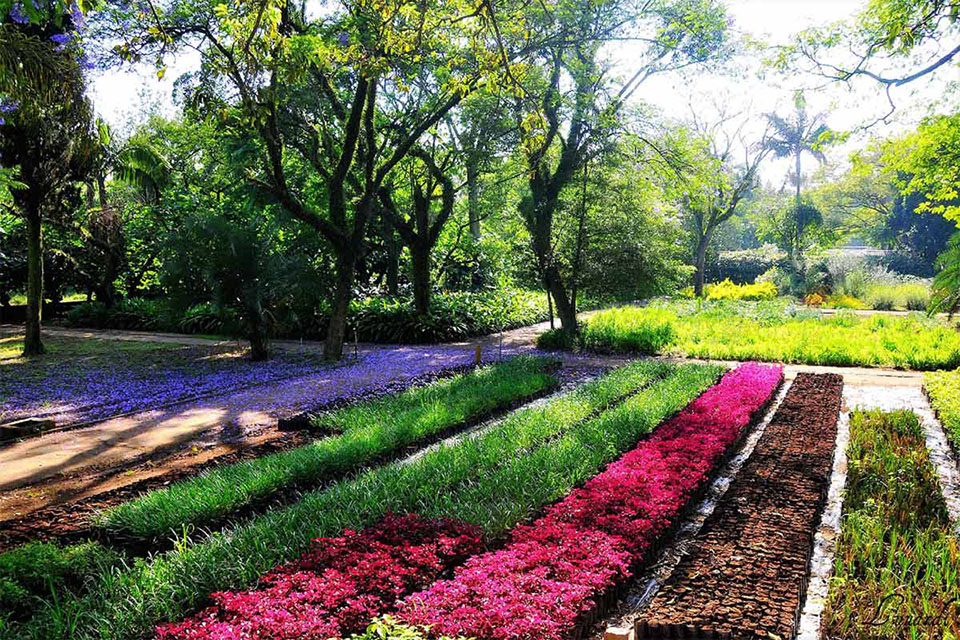

Atrações
Jardim do Ibirapuera

O PARQUE IBIRAPUERA TAMBÉM É UM JARDIM BOTÂNICO
Como muitos parques urbanos ao redor do mundo, muitas vezes nascidos como jardins para recolher espécimens de plantas e árvores de várias proveniências, para o estudo e/ou deleite dos seus frequentadores, o Parque Ibirapuera, pela variedade da vegetação que abriga, também pode ser considerado um jardim botânico.
Nos 1 milhão e 584 mil metros quadrados do Parque Ibirapuera, encontram-se mais de quinhentas espécies de árvores. Isso também faz do parque um verdadeiro jardim botânico, que revela aos amantes da natureza espécies nativas e exóticas, cuidadosamente distribuídas no espaço para formar bosques, perspectivas, cheios e vazios e pontos focais, como na composição de um quadro ou de uma tapeçaria.